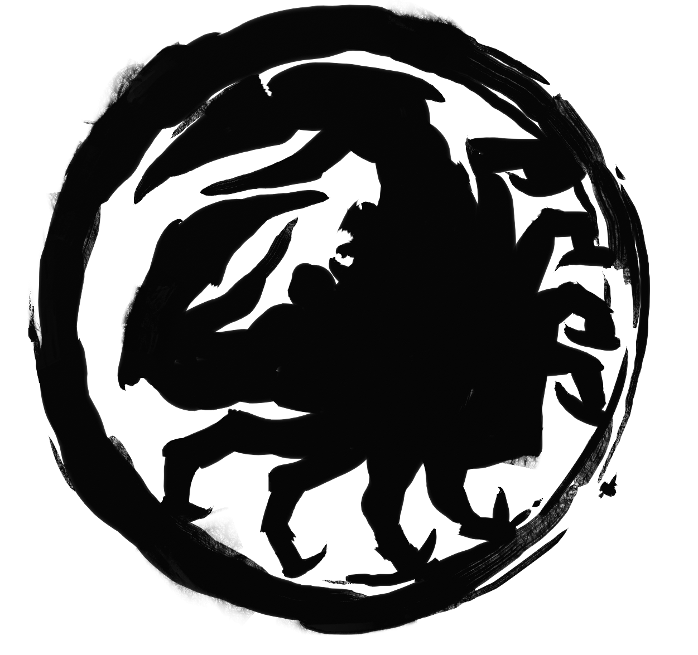

Le clan du Crabe 
Courage, Devoir, Sacrifice
Les membres du Clan du Crabe se détachent dans tout rassemblement de samouraïs :
On les évite, tant pour leur stature que pour leurs manières brusques et bourrues.
Ils sont les défenseurs de l’Empire et fuient les mondanités, pour lesquelles ils n’ont guère de temps ni d’envie ; ils montent la garde sur la Grande Muraille Kaiu, symbole durable de leur ténacité face aux horreurs de l’Outremonde.
Souvent, il leur semble que leur service est considéré comme un acquis. Leurs excellents et honorables samouraïs qui, sur la Muraille, repoussent les attaques de l’Outremonde succombent à la Souillure que véhiculent les créatures immondes de ces terres infâmes. Pendant ce temps, les faibles et les insouciants s’adonnent au jeu dans un Empire que le sang versé par le Clan du Crabe maintient en sécurité.
Les familles du clan du Crabe
La famille Hida
La famille Hida monte éternellement la garde face à l’Outremonde, et a la lourde tâche de protéger l’Empire contre les sinistres forces du Jigoku. À l’instar du Kami Hida, leur fondateur, ses membres sont grands et forts, robustes et tenaces, et ils n’ont guère de patience pour les faiblesses d’autrui. Leur devoir ardu les rend extrêmement pragmatiques, et ne leur laisse que peu de temps à consacrer aux faux-semblants de la cour. Ils supportent avec amertume la condescendance des clans qu’ils protègent, et dont les membres critiquent leurs manières et leurs tenues.
La famille Hiruma
Les Hiruma sont les yeux et les oreilles du Clan du Crabe au-delà du Mur. Ils avertissent leurs frères des attaques des hordes de monstres pour leur permettre de réagir immédiatement. Ils préparent des expéditions de sabotage contre l’ennemi, une tâche ingrate et périlleuse. Les dangers incessants de l’Outremonde obligent les Hiruma à alterner les périodes de service au-delà du Mur et au sein de l’Empire. Ils font alors office d’éclaireurs, de messagers et de yōjimbō (gardes du corps). Comparés à leurs solides frères Hida, les Hiruma sont sveltes et rapides, et comptent plus sur la vitesse et la précision.
La famille Kaiu
Des monuments à la gloire du talent de la famille Kaiu se dressent partout sur les terres du Clan du Crabe, de la Grande Muraille Kaiu elle-même aux armes et aux armures de ceux qui l’occupent. On lui doit le réseau routier, soutien logistique des fortifications, les machines de siège qui écrasent les forces de l’Outremonde, ainsi que les ouvrages défensifs du clan. Rares sont les problèmes qui résistent aux compétences des ingénieurs de la famille Kaiu.
La famille Kuni
Aucune famille de shugenja n’est plus redoutée dans l’Empire que la famille Kuni, chargée d’éradiquer le moindre signe de corruption. Elle ne recule devant rien pour y parvenir, et même les samouraïs de la famille Hida blêmissent devant certaines de ses méthodes. Les Kuni ne rechignent jamais à percer les secrets de l’Outremonde par l’étude, l’observation et même la dissection. Savoir qu’ils risquent leurs âmes à se frotter d’aussi près aux sombres créatures de Fu Leng ne les arrête même pas.
La famille Yasuki
Les fins et volubiles Yasuki ne correspondent pas à l’image que l’on se fait d’un samouraï du Clan du Crabe, mais sont aussi indispensables au clan que les autres familles. Maîtres suprêmes des marchés de l’Empire, les Yasuki manient le commerce et l’industrie, s’assurant que les armées du Crabe mangent à leur faim et ne manquent jamais de rien. Peu importe s’il faut parfois conclure un arrangement douteux pour cela. La famille Yasuki déploie son réseau commercial dans tout l’Empire ; on croise ses membres à peu près partout, en quête d’un accord dont pourrait profiter leur clan.